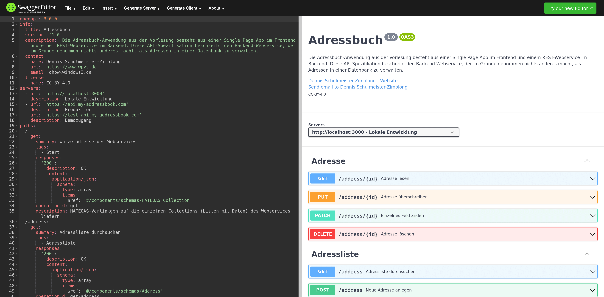
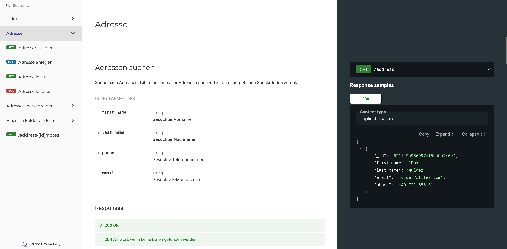

Während SOAP-Webservices von Anfang an mit der **Webservice Definition Language**
(meist einfach nur WSDL abegkürzt) in einem maschinenlesbaren formal beschrieben wurden,
gab es für REST-Webservices lange Zeit keinen vergleichbaren Standard. Dabei bietet
eine formale Beschreibung oftmals folgende Möglichkeiten:
* Generieren von Client-Code zum Aufruf des Webservices
* Generieren von Server-Code zur Implementierung des Webservices
* Automatische Validierung von Anfragen und Antworten
* Generieren statische Dokumentationsseiten
* …
Als möglichst leichtgewichtiger Ansatz kamen REST-Webservices lange ohne eine
formale Beschreibung und entsprechende Werkzeuge aus. Meistens wurden sie einfach
nur in Prosatext auf einer Begleitwebseite beschrieben, sofern es sich um öffentliche
APIs handelt (vgl. z.B. die Wikipedia API). Inzwischen hat sich jedoch das
**OpenAPI-Format** (vormals Swagger genannt) als De-Facto-Standard durchgesetzt.



Generell sind zwei Vorgehensweisen bei der Programmierung denkbar:
* **Code First:** Die API-Spezifikation wird anhand der Webservice-Implementierung
automatisch generiert (z.B. mit dem Node.js-Paket
express-oas-generator).
* **Contract First:** Die Spezifikation wird unabhängig von der konkreten
Implementierung erstellt und der Servercode anschließend entweder daraus
generiert oder von Hand implementiert.
REST-Webservices werden allerdings fast immer **Contract First** erstellt.
Die hierfür notwendigen OpenAPI-Dokumente werdem im JSON- oder YAML-Format
erstellt, wobei YAML meist bevorzugt wird. Gute Anleitungen finden sich u.a.
hier:
* Swagger OpenAPI Guide
* Smartbear OpenAPI Tutorial
Swagger Editor (Nur Quellcode)
Apicurio Studio (grafischer Editor, open-source)

Live-Vorschau in Apicurio Studio

OpenAPI-Spezifikationen bestehen in der Regel aus drei Teilen innerhalb derselben Datei:
* Name des Webservices
* Prosatext zur Beschreibung
* Kontaktdaten der Entwickler*innen
* Lizenzhinweise
* Webservice-URL
* Tags (Kategorien für die URL-Endpunkte)
Tief geschachtelte Struktur mit folgenden Inhalten:
* **URL-Pfade** (ggf. mit Platzhaltern)
* **HTTP-Verben**
* Tag (Kategorie)
* Name und Beschreibung
* URL-Parameter (optional)
* Query-Parameter (optional)
* Erwartete Anfragedaten
* **HTTP-Statuscodes**
* Erzeugte Antwortdaten
Für die Definition der Anfrage- und Antwortdaten wird meistens auf
ein weiter unten definiertes Schema verwiesen, da sie oft an mehreren
Stellen benötigt werden.
In der Regel je Ressource eine Schema-Beschreibung ihrer zulässigen
Felder und Datentypen. Zusätzlich ggf. weitere Schema-Beschreibungen
für geschachtelte Strukturfelder oder einzelne HTTP-Anfragen bzw.
HTTP-Antworten.